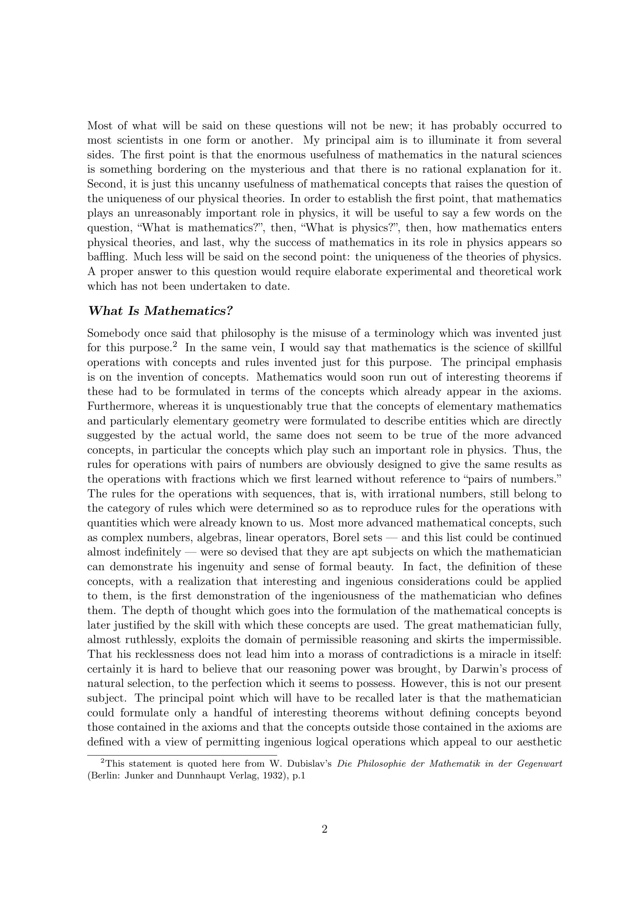
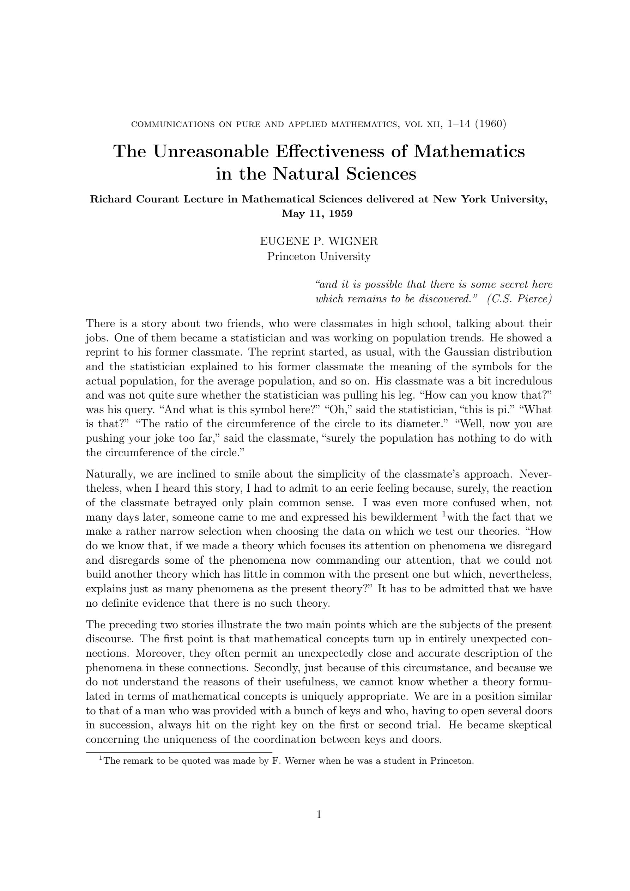

কেউ কি সত্যিই কোয়ান্টাম মেকানিক্স বুঝে?
কোয়ান্টাম মেকানিক্সের গণিত অসাধারণভাবে সফল। পরীক্ষার ফলাফলের সঙ্গে এর পূর্বাভাস অবিশ্বাস্য নির্ভুলতায় মিলে যায়। অথচ ‘কোয়ান্টাম মেকানিক্সকে বুঝা’ বলতে ঠিক কী বুঝায়, এই প্রশ্নটি এখনো পুরোপুরি মীমাংসিত নয়।
নোবেলজয়ী পদার্থবিজ্ঞানী রিচার্ড ফাইনম্যান ১৯৬৪ সালের এক বক্তৃতায় বলেছিলেন, "I think I can safely say that nobody understands quantum mechanics."
কথাটি তিনি আক্ষরিক অর্থে (কোয়ান্টাম মেকানিক্সের গণিত কেউ জানে না - এমন অর্থে) বলেন নি। বরং কোয়ান্টাম জগতের আচরণকে আমাদের পরিচিত কোনো সহজাত ছবি বা দৈনন্দিন অভিজ্ঞতার সাহায্যে বুঝানো কতটা কঠিন, সেটিই ছিল তাঁর বক্তব্যের মূল বিষয়।
কিন্তু এর চেয়েও গভীর একটি প্রশ্ন আছে।
কেন গণিত প্রকৃতিকে এত ভালোভাবে বর্ণনা করে?
১৯৬০ সালে নোবেলজয়ী পদার্থবিজ্ঞানী ইউজিন উইগনার তাঁর বিখ্যাত প্রবন্ধ 'The Unreasonable Effectiveness of Mathematics in the Natural Sciences' এ এই অদ্ভুত বিষয়টি নিয়ে আলোচনা করেন। তাঁর ভাষায়, প্রকৃতিবিজ্ঞানে গণিতের অসাধারণ কার্যকারিতা ~ is something bordering on the mysterious ~ “এমন এক বিষয়, যার কোনো যুক্তিসংগত ব্যাখ্যা আমাদের জানা নেই।”

আর বিষয়টি সত্যিই বিস্ময়কর।
গণিতবিদগণ অনেক সময় কোনো গাণিতিক কাঠামো তৈরি করেছেন সম্পূর্ণ বিমূর্ত প্রয়োজনে। পরে দেখা গেছে, সেই একই কাঠামো প্রকৃতির গভীর কোনো নিয়ম প্রকাশ করতে আশ্চর্যজনকভাবে উপযোগী।
কোয়ান্টাম মেকানিক্সে Hilbert space এর মতো গাণিতিক কাঠামোর ব্যবহার এর একটি অসাধারণ উদাহরণ। বিমূর্ত গণিতের বিকাশ এবং পরবর্তীতে পদার্থবিজ্ঞানে তার গভীর প্রয়োগ - এই সম্পর্কটি গণিত ও প্রকৃতির মধ্যে এক অদ্ভুত সংযোগের ইঙ্গিত দেয়।
তাহলে প্রশ্নটা দাঁড়ায়,
গণিত কি কেবল আমাদের তৈরি করা একটি ভাষা, যা দিয়ে আমরা প্রকৃতিকে বর্ণনা করি?
না কি এর চেয়েও গভীর কোনো সত্য আছে?
আমরা কি মহাবিশ্বকে গণিতের সাহায্যে বর্ণনা করি,
না কি কোনো অর্থে মহাবিশ্ব নিজেই গাণিতিক?
